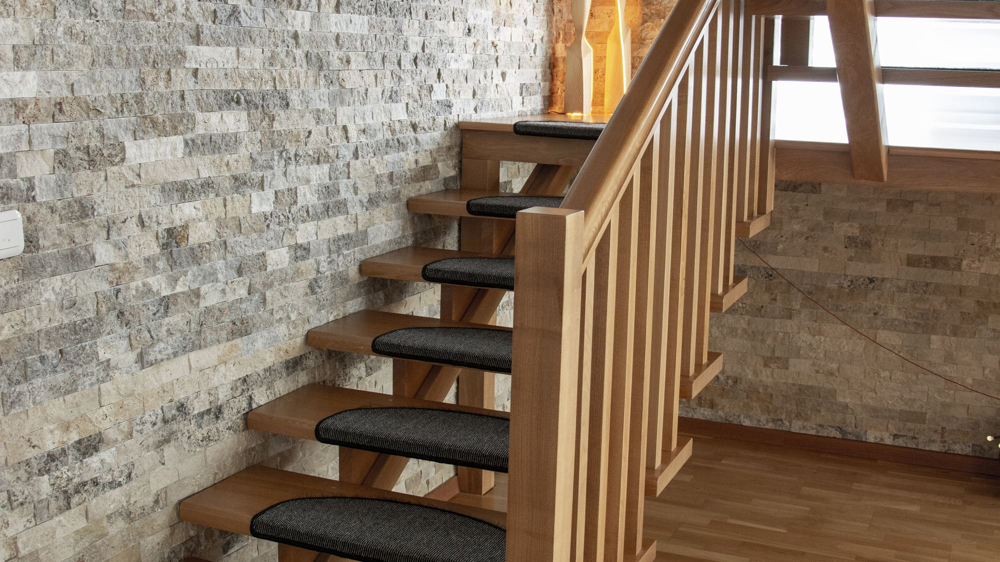
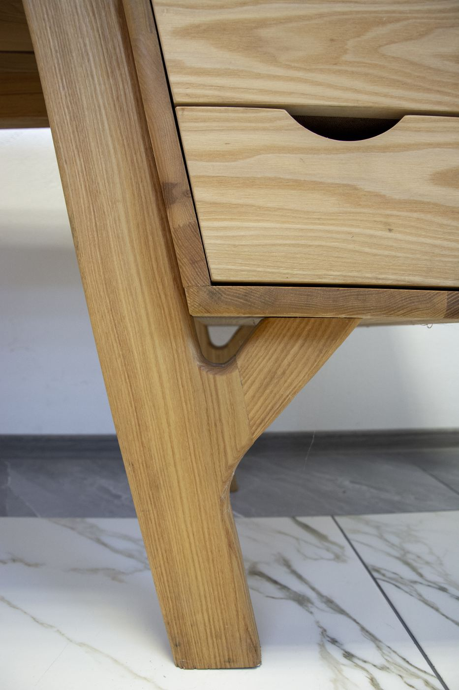
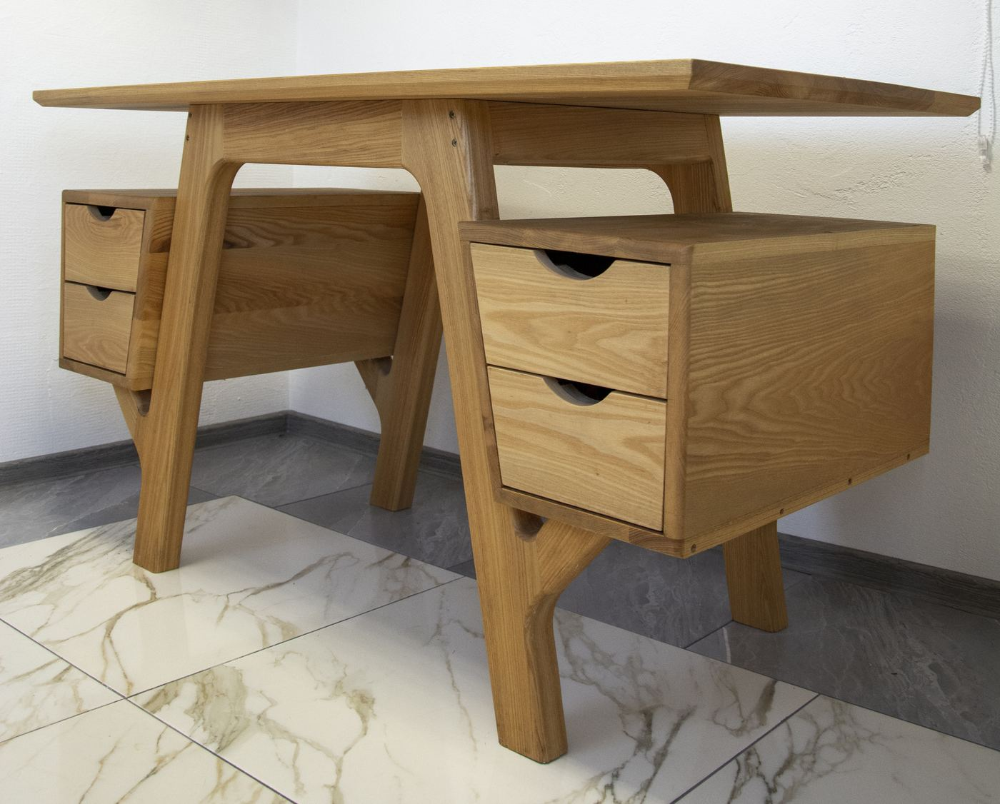
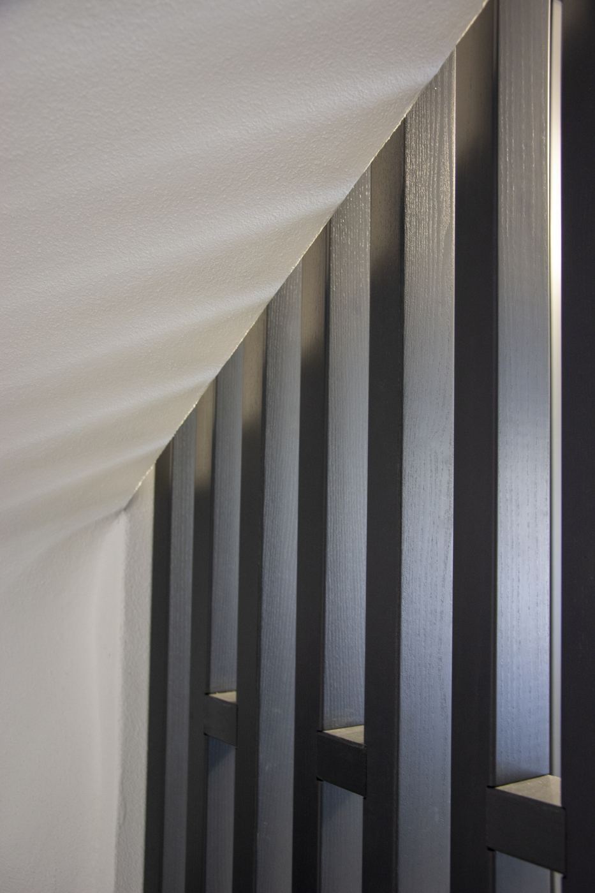
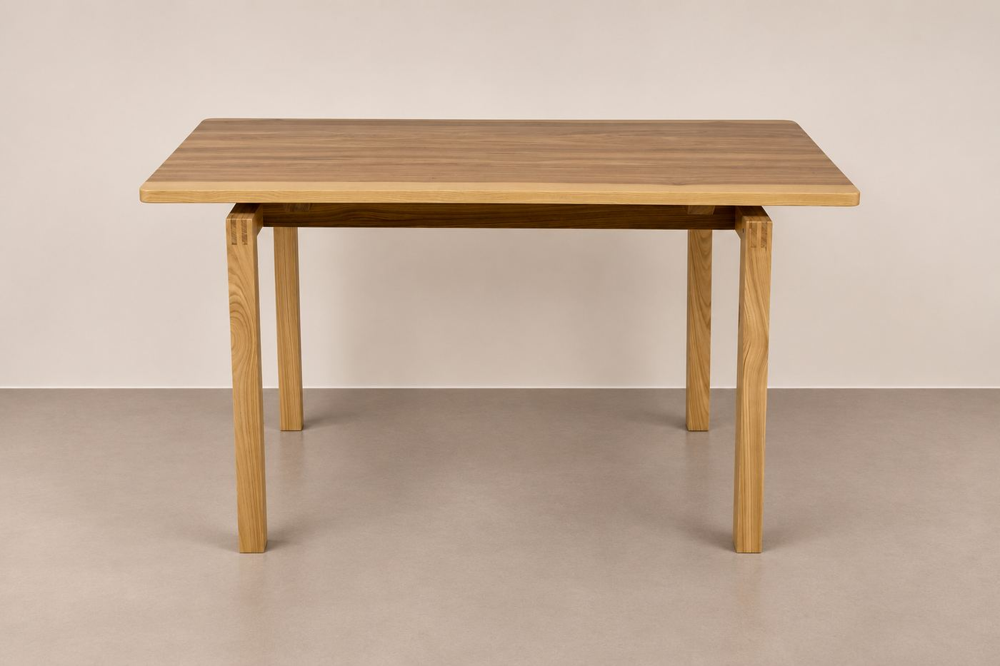
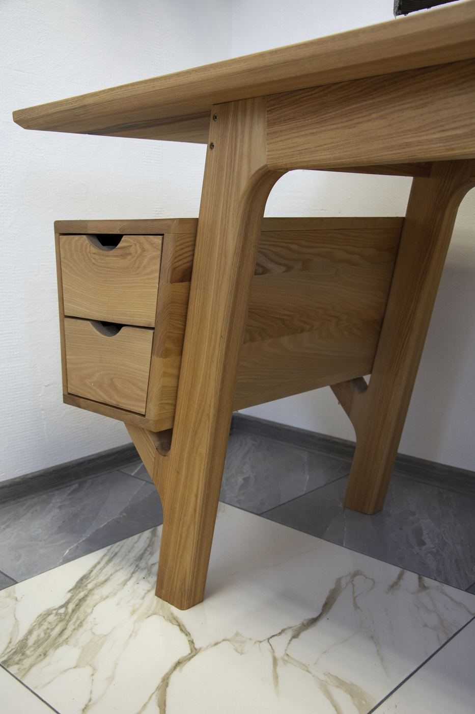
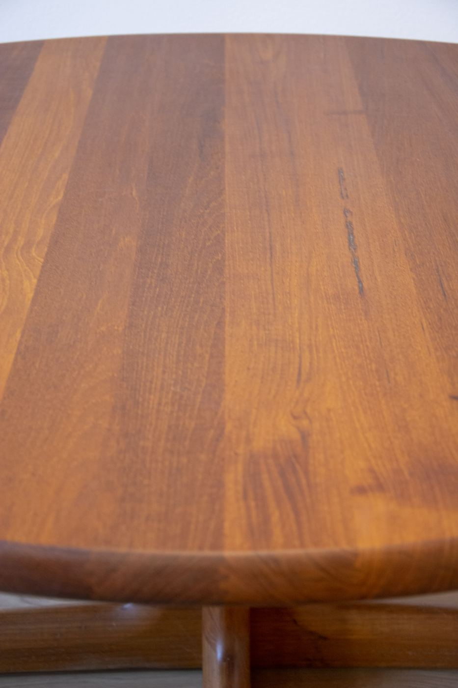

Atelier de tâmplărie · Gorj
Lemn lucrat de meșteri, cu precizie CNC.
Scări, uși și mobilier la comandă, proiectate 3D și montate acasă.

Clipul din atelier, în curând

Oamenii din atelier
Meșteri, nu o fabrică.
O echipă de meșteri cu peste 16 ani de experiență, designeri și un atelier dotat CNC.
Pe măsura spațiului
Fiecare piesă pornește de la dimensiunile reale ale casei.
Vizualizare 3D
Forma și finisajul se aleg pe randări, înainte de execuție.
Precizie CNC
Tăieturi și frezări exacte, pe fiecare piesă.
Montaj la cheie
Livrarea și montajul sunt realizate de echipa noastră.
Ce realizăm
Tâmplărie la comandă, pentru fiecare încăpere.


Proiectare 3D
Lucrarea, vizualizată în casa ta înainte de execuție.
Designerii din echipa BALU realizează proiectul, modelul 3D și randări realiste pentru fiecare spațiu.
Pentru proprietari
Din câteva fotografii și măsurători rezultă proiectul complet, trimis spre aprobare.
Pentru arhitecți și designeri
Colaborare directă pe proiect și execuție fidelă după planurile primite.


Atelier CNC
Ce se poate desena, se poate și freza.
Utilajele CNC taie și frezează lemnul exact după proiect. Realizăm la comandă piese personalizate pentru clienți privați, arhitecți și firme.
- Riflaje și lamele decorative
- Panouri și fronturi frezate
- Decor și semnalistică din lemn
- Piese după desen tehnic
Lucrări recente
Ieșite din atelier, montate acasă.
Fiecare piesă este livrată și montată de echipa noastră.


Din atelier
Cum prinde viață o piesă.
Filmări scurte din atelier, de la lemnul brut la montaj.
Cum lucrăm
De la idee la casa ta.
- 01
Ideea
Fotografii ale spațiului, o schiță sau o inspirație, împreună cu dimensiunile aproximative.
- 02
Proiect și randare 3D
Designerii noștri desenează piesa pe măsura spațiului și o prezintă în randări, până la aprobare.
- 03
Execuție în atelier
Meșterii și utilajele CNC transformă proiectul în piesă, în atelierul din Gorj.
- 04
Livrare și montaj
Echipa BALU livrează și montează piesa în România, Germania și în restul Uniunii Europene.
Harta lucrărilor
Din Gorj, în case din toată Uniunea Europeană.
Fiecare punct de pe hartă este o lucrare montată.
Schiță: harta reală a Europei se completează cu orașele lucrărilor, fără adrese exacte.
Recenzii
Spus de cei care trăiesc zilnic cu piesele noastre.
„Scara a ieșit exact ca în randare. Echipa a venit cu soluții la care nu ne gândisem, iar montajul a fost gata la termen.”
„Ușile se închid perfect, iar finisajul arată și mai bine decât ne-am imaginat. Recomandăm cu încredere.”
„Am colaborat pe un proiect de mansardă. Comunicare simplă, execuție curată după planuri, montaj fără probleme.”
Shop BALU · în curând
Piese gata făcute, din același atelier.
Piese unicat și obiecte din lemn, realizate între comenzi. Până la deschiderea magazinului, orice piesă se poate rezerva la cerere.

Masă din lemn masiv
Birou cu sertare suspendate
Masă rotundă cu picior centralFotografii în curândObiecte din lemn
Cere ofertă
Fiecare proiect începe cu o discuție.
Câteva detalii și, dacă există, fotografii ale spațiului sunt suficiente pentru o primă propunere.
- Răspuns rapid, la telefon sau pe WhatsApp
- Ofertă personalizată pentru fiecare proiect
- Consultanță și proiect 3D
- Montaj în România, Germania și în restul Uniunii Europene
Sat Padeș, județul Gorj, România
+40 767 909 792 (România)
+49 1517 1630580 (Germania)
[contact@balu.ro]